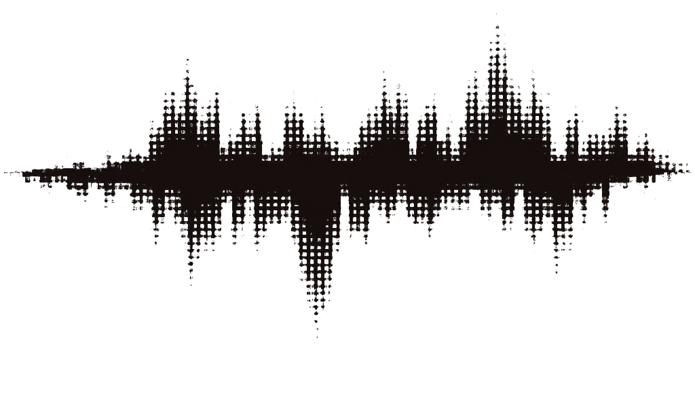

AIIN
SAYFAST
VOICETEXT
LOCALPRIVATE
LANGUAGERUST
TRANSCRIBELISTENING
SPEECHTRANSLATION
SAYFLEXVOICEWORDS
INSERTLOCAL
VOICESECURE
FASTAI
TRANSLATEPRIVATE
TRANSCRIPTIONSPEECH
LANGUAGESAYFLEX
WORDSLOCAL
RUSTTEXT
VOICEINSERT
LISTENINGLANGUAGE
LOCALVOICETRANSCRIBE
TRANSLATEPRIVATE
SPEECHWORDS
FASTRUST
PRIVACYVOICE
TRANSCRIPTIONSAYFLEX
LANGUAGELISTENING
WORDSLOCAL
VOICETEXT
SPEECHFAST
LOCALAI
SAYFLEX
INVOICE
AISAY
GOON
HEARTYPE
SOUNDLOCAL
PRIVATEVOICE
LISTENLANGUAGE
TRANSCRIPTSAYFLEX
TRANSLATIONSPEAK
LANGUAGELOCALVOICE
SPEECHINSERT
WORDSFAST
SECUREVOICE
TRANSCRIBELANGUAGE
SAYFLEXVOICETRANSLATE
LISTENWORDS
TEXTRUST
LOCALAI
PRIVATESPEECH
LANGUAGETRANSCRIPT
TRANSLATIONLOCALVOICE
SAYFLEXLISTEN
VOICEWORDS
SPEAKLOCAL
TRANSCRIBEPRIVATE
LANGUAGETRANSLATE
LISTENSPEECH
VOICEFAST
LOCALTEXT
SPEAKAI
SAYVOICE
GOFLEX
AIIN
Диктовка
Речь распознаётся локально и вставляется в активное поле.
Показывать визуализаторИндикатор записи поверх других окон
Ускоренная подготовкаГотовит результат во время пауз. Быстрее, но нагружает видеокарту
Максимальная длина записиЗапись остановится автоматически
Способ вставкиЧерез буфер обмена — быстрее и надёжнее
Пробел в концеДобавлять после вставленного текста
Подтверждать доставкуПроверять, что текст действительно появился в поле
Язык распознаванияОпределяется автоматически по речи
Переводить речь на английскийДоступно не для всех моделей
Перевод
Выделите текст в любом приложении и нажмите сочетание клавиш.
Перевод выделенногоCtrl + Alt + T
Что делать с результатомПоказать окно предпросмотра, заменить или скопировать
Держать модель прогретойБыстрее первый перевод, около 6 ГБ памяти
Первый перевод после запуска занимает около 6 секунд, дальше — 0,3–0,5 секунды.
Горячие клавиши
Работают в любом приложении. Правый Alt не используется, чтобы не мешать раскладкам.
ДиктоватьУдерживайте, отпустите для вставки
Вставить последнееПовторно вставить предыдущую диктовку
Исправить раскладкуghbdtn → привет
Модели
Локальные модели работают без интернета. Провайдеры по API — быстрее, но данные уходят наружу.
Распознавание речи
Whisper Large v3 TurboРекомендуется · высокая точность
1,6 ГБ
Выбрана
Whisper MediumДля слабых компьютеров
1,5 ГБ
Установлена
Whisper Large v3Максимальное качество, медленнее
3,1 ГБ
38 % · 12 мин
Перевод
Qwen 3.5 9BQ4_K_M · Vulkan
5,4 ГБ
Выбрана
Qwen 3.5 4BБыстрее, качество ниже
2,4 ГБ
Не установлена
Своя модель из файлаGGUF с диска
Использовать провайдеров по APIТекст будет отправляться на сторонний сервер
OpenAIКлюч не задан
Отключён
AnthropicКлюч не задан
Отключён
Пока переключатель выключен, ни один запрос наружу не уходит.
История
Хранится только на этом компьютере.
Проверить, что вставка подтверждается во всех терминалах, а не только в WezTerm.18 с · 84 символа · 0,41 с
Нужно добавить логирование причины завершения приложения.9 с · 57 символов · 0,38 с
Белое окно появляется перед визуализатором.6 с · 41 символ · 0,33 с
Хранить историюПоследние 250 записей
Local-first speech to text for Windows.EN → RU · 0,29 с
The insertion is confirmed before the popup closes.EN → RU · 0,34 с
Внешний вид
Индикатор появляется во время записи и не перехватывает фокус.
Визуализатор
Положение на экране
Показывать на активном монитореСледовать за окном, в которое идёт диктовка
Настройки
Приложение работает без прав администратора.
Запуск
Запускать вместе с WindowsСвернуто в область уведомлений
Сворачивать в трей при закрытии
Данные
Папка с моделями%LOCALAPPDATA%\SayFlex\models
Журналы диагностикиПомогают найти причину сбоя
О программе
SayFlex 0.5.7Rust · Slint · whisper.cpp · llama.cpp